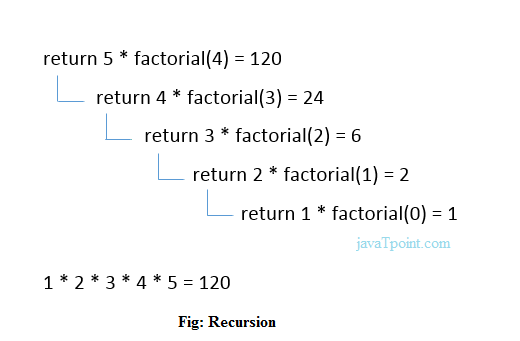

Recursion is the process which comes into existence when a function calls a copy of itself to work on a smaller problem. Any function which calls itself is called recursive function, and such function calls are called recursive calls.
Recursion is a process of calling a function within the same function again and again till the condition is satisfied. We have already seen how functions can be declared, defined and called. Recursive functions are declared and defined in the same manner. But they are called within its own body except for the first call which is obviously made by an external method.
This way of calling the methods/functions allows a function to be executed repeatedly without the use of loops. As for stopping the repeat process, a condition can be specified by the programmer. Without an exit condition, the function would get executed repeatedly in the same manner as an infinite loop. Recursive functions need to be called by any other function first in order to start the execution process. After the exit condition is satisfied the control flows out of the function and back to the calling function. Here is how the control flows in a recursive program:
Recursion cannot be applied to all the problem, but it is more useful for the tasks that can be defined in terms of similar subtasks. For Example, recursion may be applied to sorting, searching, and traversal problems.Generally, iterative solutions are more efficient than recursion since function call is always overhead. Any problem that can be solved recursively, can also be solved iteratively. However, some problems are best suited to be solved by the recursion, for example, tower of Hanoi, Fibonacci series, factorial finding, etc.
In the following example, recursion is used to calculate the factorial of a number.
#include <stdio.h>
int fact (int);
int main()
{
int n,f;
printf("Enter the number whose factorial you want to calculate?");
scanf("%d",&n);
f = fact(n);
printf("factorial = %d",f);
}
int fact(int n)
{
if (n==0)
{
return 0;
}
else if ( n == 1)
{
return 1;
}
else
{
return n*fact(n-1);
}
}
output :
Enter the number whose factorial you want to calculate?5
factorial = 120
We can understand the above program of the recursive method call by the figure given below:

A recursive function performs the tasks by dividing it into the subtasks. There is a termination condition defined in the function which is satisfied by some specific subtask. After this, the recursion stops and the final result is returned from the function.
The case at which the function doesn't recur is called the base case whereas the instances where the function keeps calling itself to perform a subtask, is called the recursive case. All the recursive functions can be written using this format.
Pseudocode for writing any recursive function is given below.
if (test_for_base)
{
return some_value;
}
else if (test_for_another_base)
{
return some_another_value;
}
else
{
// Statements;
recursive call;
}
Let's see an example to find the nth term of the Fibonacci series
#include <stdio.h>
int fibonacci(int);
void main ()
{
int n,f;
printf("Enter the value of n?");
scanf("%d",&n);
f = fibonacci(n);
printf("%d",f);
}
int fibonacci (int n)
{
if (n==0)
{
return 0;
}
else if (n == 1)
{
return 1;
}
else
{
return fibonacci(n-1)+fibonacci(n-2);
}
}
output :
Enter the value of n?12